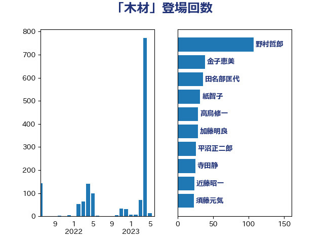

単語「木材」

| 野村哲郎 | 自由民主党 | 107 回 |
| 金子恵美 | 立憲民主党 | 39 回 |
| 田名部匡代 | 立憲民主党 | 36 回 |
| 紙智子 | 日本共産党 | 32 回 |
| 高鳥修一 | 自由民主党 | 29 回 |
| 加藤明良 | 自由民主党 | 29 回 |
| 平沼正二郎 | 自由民主党 | 26 回 |
| 寺田静 | 無所属 | 25 回 |
| 近藤昭一 | 立憲民主党 | 24 回 |
| 須藤元気 | 無所属 | 23 回 |
| 徳永エリ | 立憲民主党 | 23 回 |
| 野中厚 | 自由民主党 | 22 回 |
| 舟山康江 | 国民民主党 | 22 回 |
| 緑川貴士 | 立憲民主党 | 22 回 |
| 池畑浩太朗 | 日本維新の会 | 22 回 |
| 渡辺創 | 立憲民主党 | 21 回 |
| 長友慎治 | 国民民主党 | 18 回 |
| 角田秀穂 | 公明党 | 17 回 |
| 藤木眞也 | 自由民主党 | 17 回 |
| 石垣のりこ | 立憲民主党 | 13 回 |
| 古川元久 | 国民民主党 | 13 回 |
| 串田誠一 | 日本維新の会 | 13 回 |
| 清水貴之 | 日本維新の会 | 11 回 |
| 庄子賢一 | 公明党 | 11 回 |
| 岸田文雄 | 自由民主党 | 11 回 |
| 下野六太 | 公明党 | 11 回 |
| 鈴木憲和 | 自由民主党 | 10 回 |
| 田村貴昭 | 日本共産党 | 10 回 |
| 北神圭朗 | 無所属 | 10 回 |
| 遠藤良太 | 日本維新の会 | 9 回 |
| 古川直季 | 自由民主党 | 9 回 |
| 住吉寛紀 | 日本維新の会 | 8 回 |
| 松木けんこう | 立憲民主党 | 7 回 |
| 小林茂樹 | 自由民主党 | 7 回 |
| 野上浩太郎 | 自由民主党 | 6 回 |
| 梶山弘志 | 自由民主党 | 6 回 |
| 東国幹 | 自由民主党 | 6 回 |
| 岩渕友 | 日本共産党 | 6 回 |
| 上月良祐 | 自由民主党 | 6 回 |
| 赤木正幸 | 日本維新の会 | 5 回 |
| 笹川博義 | 自由民主党 | 5 回 |
| 神谷裕 | 立憲民主党 | 5 回 |
| 山本博司 | 公明党 | 5 回 |
| 安江伸夫 | 公明党 | 5 回 |
| 吉田豊史 | 無所属 | 5 回 |
| 佐藤公治 | 立憲民主党 | 5 回 |
| 中川宏昌 | 公明党 | 5 回 |
| 中山展宏 | 自由民主党 | 5 回 |
| 鈴木敦 | 国民民主党 | 4 回 |
| 斉藤鉄夫 | 公明党 | 4 回 |
| 山下雄平 | 自由民主党 | 4 回 |
| 山下芳生 | 日本共産党 | 4 回 |
| 大塚耕平 | 国民民主党 | 4 回 |
| 勝俣孝明 | 自由民主党 | 4 回 |
| 保岡宏武 | 自由民主党 | 4 回 |
| 重徳和彦 | 立憲民主党 | 3 回 |
| 芳賀道也 | 国民民主党 | 3 回 |
| 舞立昇治 | 自由民主党 | 3 回 |
| 竹詰仁 | 国民民主党 | 3 回 |
| 漆間譲司 | 日本維新の会 | 3 回 |
| 武部新 | 自由民主党 | 3 回 |
| 梅村みずほ | 日本維新の会 | 3 回 |
| 柿沢未途 | 無所属 | 3 回 |
| 小宮山泰子 | 立憲民主党 | 3 回 |
| 室井邦彦 | 日本維新の会 | 3 回 |
| 堀井巌 | 自由民主党 | 3 回 |
| 佐藤啓 | 自由民主党 | 3 回 |
| 井上貴博 | 自由民主党 | 3 回 |
| 五十嵐清 | 自由民主党 | 3 回 |
| 鷲尾英一郎 | 自由民主党 | 2 回 |
| 高橋英明 | 日本維新の会 | 2 回 |
| 高橋千鶴子 | 日本共産党 | 2 回 |
| 鈴木俊一 | 自由民主党 | 2 回 |
| 金子恭之 | 自由民主党 | 2 回 |
| 進藤金日子 | 自由民主党 | 2 回 |
| 輿水恵一 | 公明党 | 2 回 |
| 若松謙維 | 公明党 | 2 回 |
| 稲津久 | 公明党 | 2 回 |
| 福島伸享 | 無所属 | 2 回 |
| 横沢高徳 | 立憲民主党 | 2 回 |
| 枝野幸男 | 立憲民主党 | 2 回 |
| 小山展弘 | 立憲民主党 | 2 回 |
| 勝部賢志 | 立憲民主党 | 2 回 |
| 務台俊介 | 自由民主党 | 2 回 |
| 伊藤渉 | 公明党 | 2 回 |
| 中野英幸 | 自由民主党 | 2 回 |
| 中村裕之 | 自由民主党 | 2 回 |
| 阿達雅志 | 自由民主党 | 1 回 |
| 鎌田さゆり | 立憲民主党 | 1 回 |
| 野田国義 | 立憲民主党 | 1 回 |
| 足立敏之 | 自由民主党 | 1 回 |
| 赤嶺政賢 | 日本共産党 | 1 回 |
| 豊田俊郎 | 自由民主党 | 1 回 |
| 藤巻健太 | 日本維新の会 | 1 回 |
| 簗和生 | 自由民主党 | 1 回 |
| 笠井亮 | 日本共産党 | 1 回 |
| 竹内譲 | 公明党 | 1 回 |
| 石川昭政 | 自由民主党 | 1 回 |
| 田村まみ | 国民民主党 | 1 回 |
| 田嶋要 | 立憲民主党 | 1 回 |
| 田中健 | 国民民主党 | 1 回 |
| 滝波宏文 | 自由民主党 | 1 回 |
| 浜田聡 | NHK党 | 1 回 |
| 浅野哲 | 国民民主党 | 1 回 |
| 泉健太 | 立憲民主党 | 1 回 |
| 江藤拓 | 自由民主党 | 1 回 |
| 柳本顕 | 自由民主党 | 1 回 |
| 林芳正 | 自由民主党 | 1 回 |
| 松本剛明 | 自由民主党 | 1 回 |
| 杉久武 | 公明党 | 1 回 |
| 本田太郎 | 自由民主党 | 1 回 |
| 山東昭子 | 自由民主党 | 1 回 |
| 山崎誠 | 立憲民主党 | 1 回 |
| 尾身朝子 | 自由民主党 | 1 回 |
| 小野田紀美 | 自由民主党 | 1 回 |
| 小里泰弘 | 自由民主党 | 1 回 |
| 宮崎雅夫 | 自由民主党 | 1 回 |
| 堤かなめ | 立憲民主党 | 1 回 |
| 堂故茂 | 自由民主党 | 1 回 |
| 国定勇人 | 自由民主党 | 1 回 |
| 伊波洋一 | 無所属 | 1 回 |
| 中根一幸 | 自由民主党 | 1 回 |
| 上田勇 | 公明党 | 1 回 |
| たがや亮 | れいわ新選組 | 1 回 |